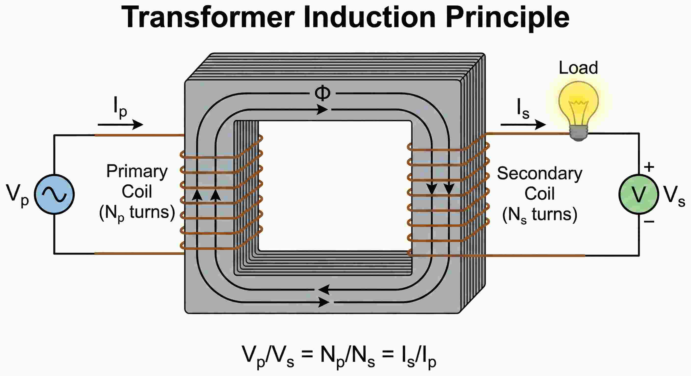

1. Prinsip Induksi Timbal-Balik

Prinsip kerja trafo induksi
Transformator bekerja dengan memindahkan energi listrik dari kumparan Primer ke Sekunder melalui perantara Fluks Magnetik yang mengalir di inti besi, tanpa ada kontak listrik langsung (Isolasi Galvanis).
Hukum Kekekalan Energi
Daya Masuk ($P_{in}$) $\approx$ Daya Keluar ($P_{out}$)
$V_p \cdot I_p = V_s \cdot I_s$
*Jika tegangan dinaikkan (Step-Up), arus pasti turun, dan sebaliknya.*
2. Batas Aman & Rasio Trafo
Di dunia nyata, rasio lilitan ($N_p:N_s$) memiliki batasan fisik. Kita tidak bisa membuat tegangan output tak terhingga.
-
Insulation Breakdown (Tegangan Jebol):
Jika $V_s$ terlalu tinggi (misal > 1000V pada trafo kecil), lapisan enamel kawat akan meleleh atau terjadi loncatan bunga api (arcing) antar lilitan.
-
Core Saturation (Kejenuhan Inti):
Inti besi memiliki batas maksimum menampung fluks magnet. Jika terlampaui, trafo akan panas (Overheat) dan gelombang output menjadi cacat (distorsi).
DOWN
📱 Lab 1: Simulasi Adaptor
Turunkan tegangan jala-jala (220V) menjadi aman disentuh.
- Set Input ($V_p$) ke 220 V.
- Set Lilitan Primer ($N_p$) ke 400.
- Tantangan: Berapa lilitan Sekunder ($N_s$) agar Output menjadi sekitar 50 - 60 V?
- Perhatikan Osiloskop: Gelombang Output (Merah) harus lebih rendah amplitudonya.
UP
🏭 Lab 2: Transmisi Listrik
PLN menaikkan tegangan untuk mengurangi rugi-rugi arus di kabel.
- Set Input ($V_p$) kecil, misal 50 V.
- Buat rasio lilitan 1:4 (misal $N_p=100, N_s=400$).
- Lihat Outputnya. Tegangan naik 4x lipat.
- Analisis: Apa yang terjadi jika Output ini dipegang? (Sangat Berbahaya).
⚠️
🔥 Lab 3: Overvoltage Test
Mencari titik batas kerusakan isolasi.
Warning: Indikator "OVERLOAD" akan menyala jika Vs > 250V.
- Set $V_p$ maksimum (240V).
- Set $N_p$ minimum (50) dan $N_s$ maksimum (500).
- Rasio transformasi menjadi 1:10. Output teoritis bisa mencapai 2400V!
- Perhatikan indikator beban. Apa yang terjadi? Ini menyimulasikan trafo meledak/terbakar.